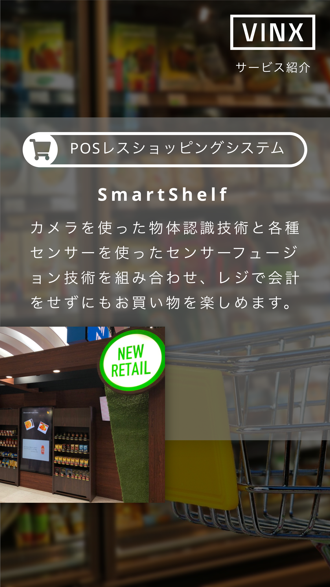

<!DOCTYPE html>
<html lang="ja">

<head>
    <meta charset="UTF-8">
    <meta name="viewport" content="width=device-width, initial-scale=1.0">
    <meta http-equiv="X-UA-Compatible" content="ie=edge">
    <title>Document</title>

    <link rel="stylesheet" href="https://cdnjs.cloudflare.com/ajax/libs/Swiper/4.5.0/css/swiper.min.css">
    <link rel="stylesheet" href="https://cdnjs.cloudflare.com/ajax/libs/animate.css/3.7.2/animate.min.css">
    <link rel="stylesheet" href="https://cdnjs.cloudflare.com/ajax/libs/animate.css/3.7.2/animate.css">
    <style>
        html,
        body {
            overflow: hidden;
        }
    </style>
</head>

<body>
    <!-- 動画 -->
    <div id="player" style="width:100%;height:100%;position:absolute;"></div>

    <!-- スライド -->
    <!-- <div class="animated slideInRight delay-45s" style="position:absolute;">
        <div class="swiper-container">
            <div class="swiper-wrapper">
                <div class="swiper-slide"></div>
                <div class="swiper-slide"></div>
                <div class="swiper-slide"></div>
            </div> -->
    <!-- ページネーション -->
    <!-- <div class="swiper-pagination"></div> -->

    <!-- ナビゲーションボタン -->
    <!-- <div class="swiper-button-prev"></div>
            <div class="swiper-button-next"></div> -->
    <!-- </div>
    </div> -->
</body>
<script src="https://cdnjs.cloudflare.com/ajax/libs/Swiper/4.5.0/js/swiper.min.js"></script>
<script src="https://cdnjs.cloudflare.com/ajax/libs/animejs/2.2.0/anime.js"></script>
<script src="https://cdnjs.cloudflare.com/ajax/libs/animejs/2.2.0/anime.min.js"></script>
<script>
    var mySwiper = new Swiper('.swiper-container', {
        // loop: true,
        // slidesPerView: 2,
        spaceBetween: 10,
        centeredSlides: true,
        // breakpoints: {
        //     767: {
        //         slidesPerView: 1,
        //         spaceBetween: 0
        //     }
        // },
        autoplay: {
            delay: 10000,
        },
        stopOnLastSlide: true,
        touchReleaseOnEdges: true,
        on: {
            reachEnd: function () {
                console.log("reach")
                // play()
            },

        }
        // navigation: {
        //     nextEl: '.swiper-button-next',
        //     prevEl: '.swiper-button-prev',
        // },
        // pagination: {
        //     el: '.swiper-pagination',
        // },
    })

    var tag = document.createElement('script');

    tag.src = "https://www.youtube.com/iframe_api";
    var firstScriptTag = document.getElementsByTagName('script')[0];
    firstScriptTag.parentNode.insertBefore(tag, firstScriptTag);

    // 3. This function creates an <iframe> (and YouTube player)
    //    after the API code downloads.
    var player;
    function onYouTubeIframeAPIReady() {
        player = new YT.Player('player', {
            // height: '360',
            // width: '640',
            autoplay: 1,
            videoId: '8bH39OAarKY',
            playerVars: {
                controls: 0, // コントロールバーを表示しない
                showinfo: 0 // 動画情報を表示しない
            },
            events: {
                'onReady': onPlayerReady,
                'onStateChange': onPlayerStateChange
            }
        });
    }

    // 4. The API will call this function when the video player is ready.
    function onPlayerReady(event) {
        // 画質の変更hd1080
        event.target.setPlaybackQuality('highres');
        // 動画をミュートにする
        // あとで消す
        // event.target.mute();
        // 再生
        event.target.playVideo();
    }


    // リコ終了時
    // 5. The API calls this function when the player's state changes.
    //    The function indicates that when playing a video (state=1),
    //    the player should play for six seconds and then stop.
    var done = false;
    function onPlayerStateChange(event) {
        // if (event.data == YT.PlayerState.PLAYING && !done) {
        //     setTimeout(stopVideo, 6000);
        //     done = true;
        // }

        // 現在のプレーヤーの状態を取得  
        var status = event.data;
        // 再生終了になったら  
        if (status == YT.PlayerState.ENDED) {
            // event.target.mute();
            event.target.mute();

            // 0秒目に移動
            event.target.seekTo(0)
            // player.stopVideo();
        }
        // else {
        //     // 音量出すunMute()
        //     event.target.mute();
        // }
        //         player.isMuted():Boolean
        // プレーヤーがミュートされている場合は true を、ミュートされていない場合は false を返します。

    }
</script>

</html>